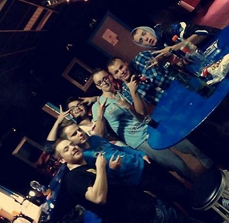

Personalia - Over mij
Auteur: (naam), datum: (dd-mm-jjjj)
Mijn naam is Yannic de Rijke Ik ben 17 jaar en Zit op het Da vinci College in Gorichem.
momenteel zit ik zonder werk maar ben wel aan het zoeken
In het weekend ben ik meestal met mijn vrienden buiten of zit ik samen met hun te gamen
